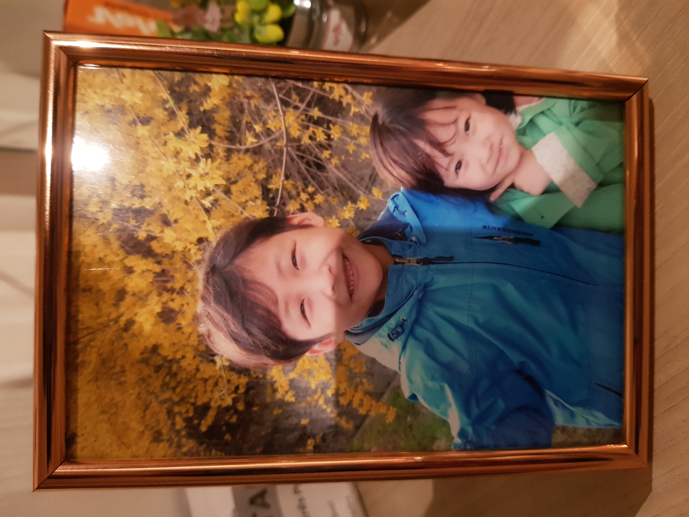

초등학교시절
초등학교 시절 엄청난 개구쟁이였다. 선생님들사이에서 만나기만 하면 똥침을 놓는 아이로 명성을 날렸다.
중학교시절
사춘기 시절. 하라는 공부보다는 하지말라는 게임이 더 재미있었던 시절이다. 부모님 속만 태우던 시절이었다.
고등학교시절
인생에서 은인을 만난 시점이다. 처음으로 화학이라는 교과목에서 전교 1등을 하고 공부에 재미를 들이던 시절이었다.